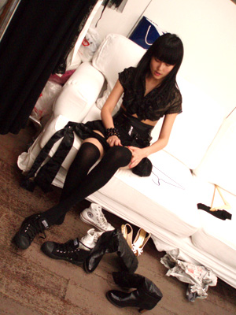
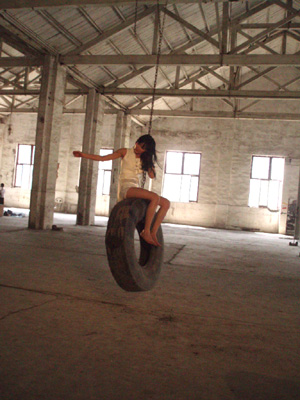
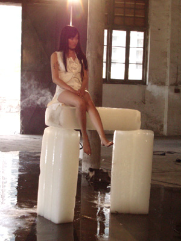
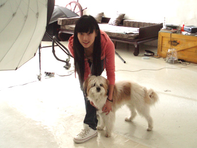

幕后有很多辛苦
并不那么光鲜亮丽的
以前不懂
就觉得舞台上特别漂亮
现在自己经历
才懂得什么都得来不易
拍《红眼睛》mv之前的试装
就试了很多
后来为了最好的效果
很多都放弃没有用到
这个过程虽然很累很复杂
但只要结果是完美的就好啦；）

拍摄过程里这些动作其实也很危险

不那么好受唉

工作的时候遇到猫猫狗狗总是很开心

在录音棚里
制作人常石磊也为了我能好好唱到感觉完美
从家里带来了我最喜欢的装饰
一个小灯
放在录音间里特别好看
大家为了我能唱到最好想得都特别周到
多少我还是有点压力
现在回想起录音的日子
感觉很温暖
有时候会自己唱很多时候
然后听制作老师指导
很认真体会哪里表现得不够完美
虽然录音间总是乱乱的
呵呵
酝酿酝酿
开唱
唱片即将和大家见面了
希望大家都会喜欢